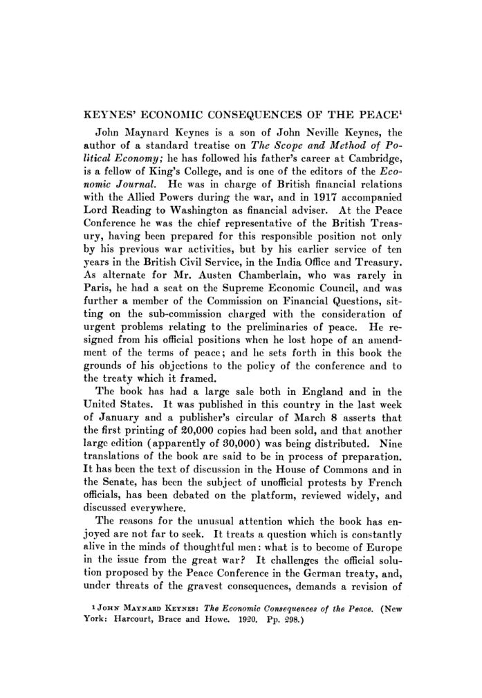

Clive Day lê Keynes: as contas das reparações e a conferência
Leitura: 10 min
Clive Day, que trabalhou na Conferência de Paz, aceita as contas de Keynes sobre as reparações, discute seus remédios e contesta a história da conferência contada no livro.


Uma circular de editor de 8 de março de 1920 informava que a primeira tiragem americana de The Economic Consequences of the Peace, de 20 mil exemplares, estava esgotada, e que outra grande edição, ao que parece de 30 mil, estava sendo distribuída. Nove traduções estariam em preparo. O livro de John Maynard Keynes fora discutido na Câmara dos Comuns e no Senado americano e provocara protestos não oficiais de autoridades francesas. Clive Day, da Yale University, resenha-o no número de junho de 1920 da American Economic Review.
Day começa pelo autor. Keynes, filho de John Neville Keynes, é fellow do King's College, em Cambridge, e um dos editores do Economic Journal. Dirigiu as relações financeiras britânicas com os aliados durante a guerra, acompanhou Lord Reading a Washington em 1917 como conselheiro financeiro e foi o principal representante do Tesouro britânico na Conferência de Paz, com assento no Conselho Econômico Supremo como suplente de Austen Chamberlain. Renunciou quando perdeu a esperança de emendar os termos, e o livro expõe suas objeções.
Por que Day chama o livro de panfleto?
Para Day, a atenção que o livro recebe tem razões claras: trata da pergunta sobre o destino da Europa, contesta a solução oficial sob ameaça das consequências mais graves e é escrito com arte. Os termos do tratado e as reparações só aparecem depois que o leitor foi conquistado por aspectos menos abstratos e fortemente pessoais. Os três primeiros capítulos, escreve Day, são inteiramente teatrais, como um desenho de Gustave Doré, com exageros e sombras pesadas. A Paris da conferência aparece em todos os seus adereços.
“Paris era um pesadelo, e todos ali estavam mórbidos.” (“Paris was a nightmare, and everyone there was morbid.”)
A conferência se resolve, no livro, num conflito de três personalidades: Clemenceau, decidido a obter para a França uma paz cartaginesa; Lloyd George, que percebe o que cada interlocutor pensa; e Wilson, que chega como rei-filósofo e se revela, para Keynes, sem o equipamento intelectual necessário para enfrentar os outros dois. Day cita esses retratos com prazer, mas diz que os cita porque caracterizam o livro. É obra de um economista sobre tema econômico, mas não é, nem pode ter sido concebida como, uma contribuição à literatura econômica.
“É um panfleto político.” (“It is a political tract.”)
Day o compara aos escritos de Daniel Defoe e do British Merchant sobre a Paz de Utrecht, dois séculos antes: textos feitos para despertar o interesse público e forçar uma ação política. Por isso mesmo considera notável, e mérito do autor, que o corpo do livro, sobre o tratado e as reparações, seja sóbrio e digno de confiança. Keynes, diz, em geral distingue bem opinião e fato e apresenta os fatos a favor e contra sua tese.
Quanto o tratado pode cobrar?
Day considera que Keynes demonstra, além de dúvida razoável, dois pontos. O primeiro é que os termos podem representar uma quebra de palavra dos aliados em relação aos princípios anunciados por Wilson antes do armistício, que previam o pagamento dos danos causados à população civil e a suas propriedades, sem indenizações punitivas. O segundo é que as reparações podem ir muito além da capacidade alemã. O tratado não fixou uma soma; a Alemanha assinou, como se disse, um cheque em branco, que no Anexo I inclui as pensões e os auxílios de separação pagos pelos governos aliados.
Pela leitura estrita das condições anteriores ao armistício, Keynes estima os danos em US$ 10,6 bilhões: US$ 2,5 bilhões para a Bélgica, US$ 4 bilhões para a França, US$ 2,85 bilhões para a Grã-Bretanha e US$ 1,25 bilhão para os demais aliados. Day diz não ter meios de conferir as cifras, mas encontra garantia na avaliação de Taussig e Young, que trabalharam na comissão americana de paz. Young poria o número mais perto de US$ 20 bilhões; a diferença parece pequena diante do que vem a seguir.
Day reproduz o cálculo de Keynes sobre uma cobrança rigorosa. Se a Alemanha pagar US$ 750 milhões por ano até 1936, os juros de 5% sobre US$ 15 bilhões, os US$ 25 bilhões com juros diferidos terão subido para US$ 50 bilhões, e a dívida total será de US$ 65 bilhões, contra US$ 40 bilhões. A partir de 1936, seriam precisos US$ 3,25 bilhões por ano só para os juros e US$ 3,9 bilhões para quitar o capital em trinta anos. Para Day, está-se num mundo de irrealidades, que a conferência deveria ter abandonado para perguntar quanto a Alemanha pode pagar.
Quanto a Alemanha pode pagar?
Keynes conclui, pelo exame dos ativos alemães e do excedente produtivo disponível para o exterior, que o país pode pagar no máximo US$ 500 milhões por ano; trinta anos de pagamentos, com 5% de juros e 1% de amortização, valem cerca de US$ 8,5 bilhões hoje. Day acha o processo criticável em detalhes. Keynes supõe perdida a Alta Silésia, o que ainda não estava decidido, desconta toda a capacidade baseada no carvão silesiano e não credita a redução das importações que viria com a cessão do território. Sua visão é a de um pessimista.
Contra os US$ 500 milhões, Day põe as estimativas de Taussig e Young, perto de US$ 1 bilhão como máximo, e a de H. C. Emery, quatro bilhões de marcos-ouro. Mas lembra que a cifra americana é um teto, possível só em condições favoráveis, e que as estatísticas de produção de antes da guerra devem ser usadas com extrema cautela. O que a Alemanha de fato pagará dependerá de fatores sociais e políticos muito mais que de teorias econômicas ou de fatos econômicos antiquados.
O primeiro remédio de Keynes é rever o tratado e fixar uma soma definida, dentro do que a Alemanha pode pagar. Day lembra que os representantes americanos defenderam esse plano desde o início. A proposta de Keynes parte de US$ 10 bilhões, incluídos os custos do exército de ocupação, desconta US$ 2,5 bilhões em créditos, como navios, cabos e material de guerra, e deixa um saldo de US$ 7,5 bilhões sem juros, em trinta prestações anuais de US$ 250 milhões. Day observa que o valor presente é muito menor que o nominal e nota que Keynes criticara a contraproposta alemã justamente por apresentar como grande uma soma modesta. Seu próprio palpite é que os aliados fixarão uma soma muito maior e receberão ainda menos.
E as dívidas entre aliados e o livre comércio?
O segundo remédio é cancelar as dívidas de guerra entre os governos aliados. Pelas cifras de Keynes, os Estados Unidos perderiam US$ 10 bilhões e o Reino Unido US$ 4,5 bilhões; a França ganharia US$ 3,5 bilhões e a Itália US$ 4 bilhões. Day acha boa parte do argumento correta, mas pensa que os americanos, que adiantaram o dinheiro esperando em troca justiça, decência e ordem, não aceitariam nas condições presentes que o governo renunciasse aos créditos e ao que lhe resta de influência sobre os governos europeus, temendo financiar empreendimentos militaristas.
Os demais remédios, para Day, têm menos importância. Keynes exagera o efeito das novas fronteiras sobre o carvão e o ferro: o carvão silesiano era exportado à Áustria antes da guerra, apesar da fronteira. A proposta de uma união de livre comércio sob a Liga das Nações, obrigatória por dez anos para a Alemanha, a Polônia e os novos estados dos antigos impérios austro-húngaro e turco, é, para Day, extraordinária. Ele não vê nela perigo político e reconhece um benefício econômico quase sem mistura, mas lembra que os pequenos estados queriam a independência justamente para ter política própria; negar-lhes isso exigiria dar um exército à Liga.
Que história da conferência o livro conta?
Day volta aos capítulos teatrais porque são os mais divulgados e os que mais marcarão os leitores. Assusta-o ler numa revista sóbria que os retratos de Keynes serão estudados pelos historiadores no próximo século. Para ele, a análise é superficial em dois pontos. Keynes ignora o trabalho da conferência fora do campo que mais lhe interessa, sobretudo os acordos territoriais, obra construtiva de primeira grandeza e condição da paz, da desmobilização e da recuperação. E dá a impressão de que o tratado foi decidido por três chefes de governo, quando as comissões, algumas reunidas por meses, examinavam os fatos e fixavam os limites de cada acordo.
Day fala da própria experiência na área territorial, onde acompanhava cada questão do Conselho dos Dez a uma comissão e ao Conselho dos Quatro. Compara o método de Keynes ao de Heródoto, a partir de um ensaio de Macaulay de 1828: Keynes não conta o que os personagens disseram, mas o que pensaram. Considera Clemenceau exaltado acima de seu papel real e nota que Tardieu, força do lado francês, nem é mencionado. Contesta o retrato de Wilson como lento e inadaptável, impressão que diz não ser partilhada por alguns conselheiros britânicos. A conclusão é que Wilson fez mais do que qualquer outro poderia, sem ser onipotente.
“nenhum homem na Terra [...] poderia conciliar os interesses em conflito e obter uma paz perfeita” (“no man on earth ... could compose the conflicting interests and win a perfect peace”)
Day encerra notando que o próprio Keynes, ao discutir os caminhos abertos a Wilson diante da recusa francesa e britânica, não encontra nenhum que prometesse resultado melhor.
Na minha leitura
Na minha leitura, a resenha vale por separar duas coisas que o livro mistura: a retórica e a contabilidade. Day aceita a contabilidade, discute suas premissas e recusa a retórica como história. A crítica mais útil, do ponto de vista econômico, é a da capacidade de pagamento. Keynes e seus críticos americanos divergem por um fator de dois, mas Day mostra que a divergência vem de premissas sobre a produção futura, e que essas premissas dependem de condições sociais e políticas que nenhuma série de antes da guerra mede.
O exercício dos juros compostos é a outra lição de método. Uma dívida cujo serviço supera o que o devedor pode pagar cresce sozinha, e o número nominal deixa de informar quanto será recebido. Day tira daí a mesma conclusão de Keynes, a de que é preciso fixar uma soma pagável, e discorda apenas sobre quanto e sobre a probabilidade de os credores aceitarem a conta.
Glossário
- Reparações
- pagamentos exigidos da Alemanha pelo tratado de paz por danos e custos de guerra.
- Anexo I
- parte do tratado que define as categorias de danos cobráveis, incluindo pensões e auxílios de separação.
- Auxílios de separação
- pagamentos dos governos às famílias dos mobilizados durante a guerra.
- Valor presente
- valor hoje de uma sequência de pagamentos futuros, descontados a uma taxa de juros.
- Capacidade de pagamento
- excedente que um país pode transferir ao exterior sem comprometer sua produção.
- Paz cartaginesa
- acordo que busca enfraquecer de modo permanente o vencido.
Fontes
- Keynes' Economic Consequences of the Peace — Clive Day (Yale University) (pp. 299–312). JSTOR · Internet Archive (PDF)
- Edição completa, com os demais artigos: Nº 164 do Arquivo.
Documento em domínio público (EUA, publicado antes de 1931), via JSTOR Early Journal Content e Internet Archive. Resumo e comentário do autor deste site, sem afiliação com a American Economic Association. Encontrou um erro? Escreva: a correção é publicada no próprio texto, com data.
← Berglund, 1920: a frota que a guerra deu aos Estados Unidos ↑ Nº 164 · A frota que a guerra deu aos Estados Unidos e a conta de Keynes